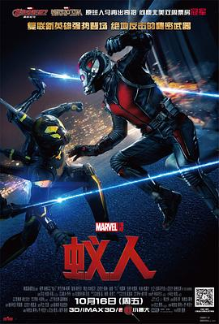

7.7
蚁人
Ant-Man
2015
美国
评分 7.7
导演:
佩顿·里德
演员:
保罗·路德 / 迈克尔·道格拉斯 / 伊万杰琳·莉莉 / 寇瑞·斯托尔 / 迈克尔·佩纳 / 大卫·达斯马齐连 / 朱迪·格雷尔
类型:
冒险,动作,科幻
剧情简介
斯科特·朗是一名从工程师沦为小偷的普通人，他因劫富济贫入狱，失去了与女儿共同生活的机会。出狱后，他试图重新开始，却因社会的偏见与经济压力再度陷入困境。一次看似普通的盗窃行动改变了他的命运，他意外盗走的竟是一套能够缩小身体、增强力量的高科技战服——“蚁人战衣”。背后的人正是隐居多年的科学家汉克·皮姆博士，他需要一个值得信任的人继承这项危险技术。皮姆的女儿霍普聪明果断，却对斯科特的过去心存疑虑。三人在磨合与冲突中逐渐形成合作关系。随着皮姆旧日研究的敌人达伦·克罗斯日益接近制造“黄蜂战衣”的成功，世界正面临一个可能失控的威胁。为了阻止高危技术落入邪恶之手，斯科特不得不带领一支由好友组成的临时小队展开行动。在训练过程中，斯科特学习利用蚁人战衣控制多种蚂蚁，通过缩放能力进行潜入、侦查和战斗。他也必须战胜对自我的怀疑，承担起保护家人与世界的责任。当最终决战来临，他不仅要对抗技术更强大的对手，也必须作出牺牲性的选择，以证明自己的价值。影片以轻松幽默的风格包裹紧凑的冒险节奏，展现了一个平凡父亲如何在一场高风险任务中找到新的生活方向，也让“蚁人”的名字真正成为英雄象征。